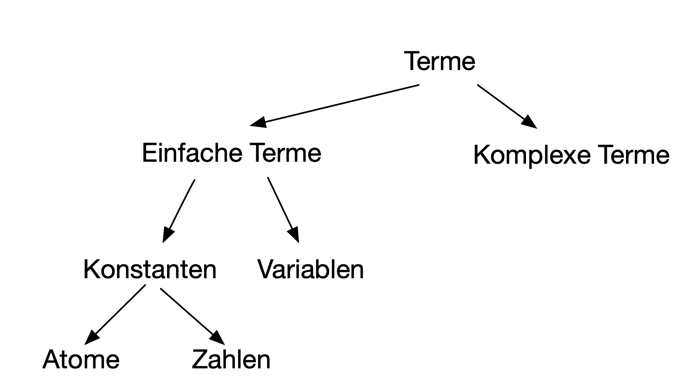

Relational-logische Programmierung
Programmierparadigmen
Ziele
- Vermittlung von Grundkenntnissen und Fertigkeiten der logischen/prädikativen/relationalen Programmierung
- Kennenlernen der Syntax und Semantik von Prolog
- Ausführung von Prolog-Programen
Einführung
- Relational-logische Programmierung: Programme spezifizieren Relationen zwischen Größen.
- Logische Programmierung: Programm mit Datenstrukturen: Listen, Binärbäume, symbolische Ausdrücke, natürliche Zahlen.
- Der Ursprung der logischen Programmierung: automatische Theorembeweiser.
- Sie verlangt eine Änderung der Denkweise:
- Strukturierte logische Formeln werden als Relations- (Prozedur-) Spezifikationen betrachtet.
- Eine Frage zu einer logischen Implikation wird als Relations- (Prozedur-) Aufruf betrachtet.
- Der Beweis der Implikation ist dann die Berechnung der Antwort.
- Konkreter: Ein Axiom der Form:
A if B1 and B2 ... and Bn
kann als Prozedur in einer Programmiersprache betrachtet werden:Aist der Prozedurkopf,- die
Bisbilden ihren Rumpf.
- Der Versuch
Azu lösen, wird als Ausführung der Prozedur verstanden. Dazu muss der AusdruckB1 and B2 ... and Bngelöst bzw. ausgeführt werden.
Relationale Programmierung mit Prolog
- Prolog (Programming in Logic) wurde Anfang der 1970er Jahre von dem französischen Informatiker Alain Colmerauer entwickelt.
- Prolog hat sich als Programmiersprache über die strikte logische Basis hinaus entwickelt: Praktische Programmierkonstrukte wie arithmetische Operationen, Optimierungshilfmittel und Ein-/Ausgabe sind hinzugekommen.
- Die Darstellungen in den folgenden Abschnitten basieren auf [Bramer2013] und [Clocksin2003].
Syntax und Semantik relational-logischer Programme
- Die Syntax basiert auf einer Teilmenge der Prädikatenkalküls. Ein relational-logisches Programm besteht aus einer Menge von Formeln, die nach Fakten und Regeln unterschieden werden. Beide beschreiben bekannte Relationen auf der Problemdomäne.
- Die Semantik besteht in einer Menge von Antworten auf Fragen.
- Ein Programm wird ausgeführt durch eine logische Aussage, die auch Frage oder Zielausdruck (oder goal oder query) genannt wird.
- Fragen können Variablen enthalten.
- Die Beantwortung von Fragen mit Variablen besteht darin, Variablenbindungen zu finden, die die Frage „beweisen“.
- Dies geschieht mithilfe zweier Techniken:
- Unifikation: Belegung von Variablen in zwei Termen, so dass diese gleich werden.
- Backtracking: Suchstrategie bei der Beweisfindung.
- Es gibt nur eine primitive Operation: den Unifikationsoperator
=. - Es gibt keine Typen.
Einstiegsbeispiel
- Das „Hallo Welt“-Äquivalent für ein Prolog-Programm ist meistens
eine Wissensdatenbank mit Verwandtschaftsverhältnissen.
- Eltern: Paul, Elfriede
- Kinder: Klaus, Claudia, Monika
Fakten in Prolog:
vater(klaus, paul). vater(claudia, paul). vater(monika, paul). mutter(klaus, elfriede). mutter(claudia, elfriede). mutter(monika, elfriede). verheiratet(paul, elfriede).
Start des Prolog-Interpreters
- Im folgenden wird SWI-Prolog benutzt.
- Nach dem Start des Interpreters und der Konsultation der Faktendatei
stammbaum.plkönnen Fragen an den Interpreter gestellt werden:
Welcome to SWI-Prolog (threaded, 64 bits, version 7.4.2) SWI-Prolog comes with ABSOLUTELY NO WARRANTY. This is free software. Please run ?- license. for legal details. For online help and background, visit http://www.swi-prolog.org For built-in help, use ?- help(Topic). or ?- apropos(Word). 1 ?- consult('stammbaum.pl'). true. 2 ?- vater(klaus, paul). true. 3 ?- mutter(claudia, paul). false.
Weitere Beispiele für Fragen (Zielausdrücke, goals):
Fragen können Variablen benutzen, die stets mit einem Großbuchstaben beginnen müssen.
?- mutter(klaus, elfriede).
true.
?- vater(claudia, X).
X=paul.
?- vater(peter, X).
false.
?- vater(X, paul).
X=klaus;
X=claudia;
X=monika.
?- verheiratet(X, Y).
X=paul;
Y=elfriede.
Regeln
Nehmen wir an, wir möchten auch Anfragen über die Schwesterbeziehung in die Datenbasis aufnehmen, um entsprechende Anfragen beantworten zu können. Dann hat man zwei Möglichkeiten:
Neue Fakten hinzufügen:
schwester(claudia, monika). schwester(monika, claudia). schwester(klaus, claudia). schwester(klaus, monika).
- Formulierung einer Regel:
Yist Schwester vonX, fallsYweiblich und Mutter vonXgleich Mutter vonYist und Vater vonXgleich Vater vonY.
Dann muss man nur noch als Fakten festhalten, welche Familienmitglieder weiblich sind. Die Regel erlaubt es, aus bekannten Fakten neue herzuleiten!
Prolog-Programm mit Schwesterregel
Fakten:
vater(klaus, paul). vater(claudia, paul). vater(monika, paul). mutter(klaus, elfriede). mutter(claudia, elfriede). mutter(monika, elfriede). verheiratet(paul, elfriede). weiblich(claudia). weiblich(monika). weiblich(elfriede).
Regeln:
schwester(X, Y):- weiblich(Y), mutter(X, Z), mutter(Y, Z), vater(X, W), vater(Y, W), X \== Y.
Beispielanfragen
?- schwester(klaus, claudia).
Das Prolog-System muss
- prüfen, ob
claudiaweiblich ist (Faktum) - erkennen, dass
mutter(klaus,Z)undmutter(claudia,Z)gelten fürZ=elfriede - erkennen, dass
vater(klaus,W)undvater(claudia,W)gelten fürW=Paul - daher
trueausgeben
?- schwester(klaus, X).
- Die Frage bedeutet: Wer sind die Schwestern von Klaus?
- Das Prolog-System durchsucht seine Datenbank von Fakten (und Regeln)
in fester Reihenfolge; nämlich:
- von oben nach unten
- von links nach rechts
Daher liefert die Anfrage die Antwort:
X=claudia; X=monika; false.
?- schwester(X, Y).
Es ist nicht schwer zu sehen, dass aufgrund der o.g. Auswertestrategie folgende Ausgabe erzeugt wird:
X = klaus, Y = claudia ; X = monika, Y = claudia ; X = klaus, Y = monika ; X = claudia, Y = monika ; false.
modus ponens
- Die oben gezeigten Ableitungen basieren auf dem modus ponens,
einer Schlussregel der Logik:
Aus den Prämissen Wenn A dann B und A lässt sich B schlussfolgern. - Mit anderen Worten: Der logische Ausdruck \[((A\to B)\wedge A)\to B\] ist eine Tautologie.
- Die oben genannte Beispielanfrage
schwester(klaus, claudia).entspricht dem B. Die rechte Seite der Schwesterregel
weiblich(Y), mutter(X, Z), mutter(Y, Z), vater(X, W), vater(Y, W), X \== Y.
entpricht dem A. Wenn also A bewiesen werden kann, d. h. eine Belegung der Variablen
X, Y, WundZgefunden werden kann, für die alle Teilausdrücke von A wahr werden, ist auch B bewiesen.
Basiskonzepte von Prolog
Terme
- Alle Daten (einschließlich der Prolog-Programme) in Prolog werden durch Terme repräsentiert.
- Ein Term ist:
- ein Atom
- Beispiele sind
elmshorn,claudia. Atome beginnen mit einem Kleinbuchstaben. - eine Variable
- Variablen beginnen mit einem Großbuchstaben oder dem Unterstrich. Ein singulärer Unterstrich bezeichnet die anonyme Variable, die für „irgendeinen Term” steht.
- eine Ganzzahl oder eine Gleitkommazahl
- ein zusammengesetzter Term (compound term)
- Wenn \(t_1, t_2, \ldots ,t_n\) Terme sind, dann ist auch \(f(t_1,
t_2, \ldots ,t_n)\) ein Term. \(f\) heißt Funktor und \(n\) ist die
Stelligkeit (arity) des zusammengesetzten Terms.
Beispiele:f(a),g(f(X)),+(a, f(X))
Übersicht

Stelligkeit
- In Prolog können zwei Prädikate mit demselben Funktor aber unterschiedlicher Stelligkeit definiert werden.
- Prolog behandelte diese als zwei verschiedene Prädikate.
- In der Prolog-Dokumentation wird die Stelligkeit eines Prädikats durch Anhängen von "/" gefolgt von der Zahl, die die Stelligkeit angibt, dargestellt.
Programme
- Ein Prolog-Programm besteht aus einer Menge von Prädikaten.
- Prädikate beschreiben Relationen zwischen ihren Argumenten. Logisch betrachtet beschreibt ein Prolog-Programm, was gilt.
- Jedes Prädikat besitzt ein Atom als Namen und beliebig viele Argumente.
- Jedes Argument ist ein Prolog-Term.
- Ein Prädikat mit dem Namen
Predund \(n\) Argumenten wird durch einen Prädikatsindikator notiert:Pred/n. \(n\) ist die Stelligkeit des Prädikats. - Ein Prädikat wird durch eine Menge von Klauseln (s. u.) definiert.
- Die Klauseln, die ein Prädikat definieren, stellen logische Alternativen dar. Wenn eine der Klauseln wahr ist, ist das ganze Prädikat war.
Klauseln – Regeln
- Ein Klausel ist entweder ein Fakt oder eine Regel.
- Eine Regel hat die Form:
Kopf :- Rumpf.- Die Form des
Kopfhängt von der Zahl der Argumente des Prädikats ab:- Besitzt das Prädikat keine Argumente, dann besteht der
Kopfnur aus dem Namen des Prädikats, ist also ein Atom. - Andernfalls ist
Kopfein zusammengesetzter Term, z. B.:
schwester(X, Y)
- Besitzt das Prädikat keine Argumente, dann besteht der
- Der
Rumpfhat die Form: \(B_1,\ldots,B_n\), wobei die \(B_i\) Terme sind, die mit dem Komma konjunktiv verknüpft sind. - Die Zeichenfolge
:-steht für die logische Implikation, gerichtet vom Rumpf zum Kopf.
- Die Form des
Z. B. kann die Regel
father(Dad, Child) :- parent(Dad, Child), male(Dad).
wie folgt gelesen werden:
Dad(eine Variable) istfathervonChild(Variable), wennDadparentvonChildundDadmaleist.
Klauseln – Fakten
- Ein Faktum wird so aufgeschrieben:
Kopf. - Dieser Ausdruck ist äquivalent zur Regel:
Kopf :- true. - Logisch bedeutet das, dass die Regel immer wahr ist, weil das
Standardprädikat
true/0immer wahr ist.
Starten von Prolog-Programmen
- Eingabe von Fragen/Zielausdrücken (queries) am Eingabeprompt des Prolog-Interpreters
- Ein Zielausdruck besteht aus dem Namen eines beliebigen Prädikats und seiner Argumente.
- Eine Frage kann aus der Und-Verknüpfung von mehreren Zielausdrücken bestehen.
- In einer Frage sind Variabeln existenz-quantifiziert. Eine Frage
p(X)kann so gelesen werden: Existiert eine Variablenbindung für X, so dassp(X)wahr wird. - Wenn eine passende Variablenbindung gefunden werden kann (the goal succeeds), antwortet der Interpreter mit einem logisch äquivalenten Zielausdruck.
- Wenn eine Frage mehrere Antworten hat, liefert der Interpreter die übrigen auf besondere Anforderung (in SWI-Prolog durch Eingabe von Leerzeichen oder Semikolon).
Ausführung von Prolog-Programmen
Die operationale Semantik von Prolog
- Die Ausführung von Prolog-Code kann als ein Spezialfall einer Resolution betrachtet werden.
- Die Resolution ist ein Verfahren der formalen Logik, um die Gültigkeit einer logischen Formel zu prüfen. Dabei wird versucht, aus der Verneinung der Frage einen Widerspruch abzuleiten.
- Wenn ein Widerspruch gefunden wird, ist die Frage die logische Folgerung aus dem Programm.
- Ein wichtiger Schritt in diesem Prozess ist die Unifikation von Termen.
- Wird der Kopf einer Klausel für die Unifikation mit einem Zielausdruck ausgewählt, wird diese auf die Argumente von beiden Termen angewendet.
- Daraus folgt, dass es in Prolog keine Unterscheidung zwischen Ein- und Ausgabeparametern gibt. (Vgl. Implementierung von natürlichen Zahlen!)
- Sind die Köpfe mehrerer Klauseln mit einem Zielausdruck unifizierbar, werden die Alternativen durch Backtracking abgearbeitet.
- Informell kann die Ausführungsstrategie von Prolog als Tiefensuche (depth-first search) mit chronologischem Backtracking betrachtet werden (nähere Erläuterung s. u.).
Unifikation
Informelle Definition:
Zwei Terme sind unifizierbar, wenn sie identisch sind oder Variablen enthalten, die einheitlich mit Termen so belegt werden können, dass sie gleich (unifiziert) sind.
- Beispiele:
- karin und karin sind unifiziert.
- 42 und 42 sind unifiziert.
- weiblich(karla) und weiblich(karla) sind unifiziert.
- klara und rosa sind nicht unifizierbar.
- weiblich(karla) und weiblich(rosa) sind nicht unifizierbar.
- Welche der folgenden Term-Paare sind unifizierbar?
- rosa und X
- weiblich(X) und weiblich(klara)
- liebt(rosa,X) und liebt(X,karl)
Präzise Definition
- Sind \(t_1\) und \(t_2\) Konstanten, dann sind \(t_1\) und \(t_2\) unifizierbar, wenn sie dasselbe Atom oder dieselbe Zahl sind.
- Ist \(t_1\) eine Variable und \(t_2\) irgendein Term, dann sind \(t_1\) und \(t_2\) unifizierbar, wenn \(t_1\) mit \(t_2\) belegt wird (und umgekehrt).
- Sind \(t_1\) und \(t_2\) komplexe Terme, dann sind sie unifizierbar, wenn:
- sie denselben Funktor mit derselben Stelligkeit besitzen, und
- alle ihre korrespondierenden Argumente unifizierbar sind, und
- die Variablenbelegungen kompatibel sind.
Anwendungsbeispiele für =/2
?- claudia = claudia. ... . ?- claudia = claudius. ... . ?- claudia = X. ... . ?- X = claudia, X = claudius. ... . ?- k(s(g),Y) = k(X,t(k)). ... , ... . ?- father(X) = X. ... .
Standardprädikate
- Es gibt einige vordefinierte Standardprädikate, z. B.
=/2ist wahr, wenn seine Argumente unifizierbar sind;true/0ist immer wahr,false/0immer falsch;dif/2is wahr genau dann, wenn die Argumente unterschiedliche Terme sind;,/2bezeichnet die Konjunktion,;/2die Disjunktion.
- Standardprädikate für den Vergleich von Zahlen (alle zweistellig):
=:=,=\=numerische Gleichheit, Ungleichheit<,>,=<,>=
- Arithmetische Operationen (alle zweistellig):
+ - * / // mod
Es gelten die üblichen Vorrangregeln. - Die Standardprädikate für Zahlen können in Infixnotation geschrieben
werden, also
3 + 4anstatt+(3, 4).
Beachte: Der Unifikationsoperator
=/2bewirkt keine Auswertung arithmetischer Ausdrücke, dafür steht der Operatoris/2zur Verfügung:?- X = 3 + 4. X = 3+4. ?- X is 3+4. X = 7.
Resolution / Backtracking
- Resolution: Grundlage für eine automatische Beweisführung
- basiert auf dem Prinzip der Unifikation und des automatischen Rücksetzens (Backtracking).
- Prolog benutzt Tiefensuche; Reihenfolge der Klauseln entscheidend
- Teilziele einer Anfrage werden von links nach rechts bearbeitet.
- Zu jedem Teilziel wird die im Programmtext erste Klausel ausgewählt und versucht mit dem Teilziel zu unifizieren.
- Ist die Klausel eine Regel, so wird das Teilziel durch den Regelrumpf ersetzt und versucht zu beweisen. Andernfalls wird versucht das nächste Ziel der Anfrage herzuleiten.
- Tritt während der Resolution ein Fehler bei der Unifikation auf, wird also keine passende Programmklausel gefunden, so springt das PROLOG-System durch das eingebaute Rücksetzen auf den letzten Punkt zurück, an dem eine Entscheidung getroffen wurde, hebt die an dieser Stelle gemachten Variablenbindungen auf und wählt die nächste alternative Klausel aus.
Beispiel
father(abraham,isaac). father(haran,lot). father(haran,milcah). father(haran,yiscah). male(isaac). male(lot). female(milcah). female(yiscah). son(X,Y) :- father(Y,X), male(X). daughter(X,Y) :- father(Y,X), female(X).
Nachfolgend wird die Resolution der Anfrage
daughter(X,haran).
gezeigt.
- Prolog sucht passende Programmklausel
Unifikationdaughter(X,Y)unddaughter(X,haran)
\(\rightarrow\) SubstitutionY=haran
- Das ursprüngliche Ziel wird durch den Regelrumpf ersetzt
\(\rightarrow\) neue Zielanfrage:father(haran,X), female(X). - linkes Teilziel wird ausgewählt:
father(haran,X)
erste Programmklausel wird ausgewählt:father(abraham,isaac).
\(\rightarrow\) Unifikation nicht möglich
\(\rightarrow\) Backtracking - nächste alternative Programmklausel wird ausgewählt:
father(haran,lot)
\(\rightarrow\) SubstitutionX=lot
- rechtes Teilziel wird ausgewählt und Substitution angewendet:
female(lot)
\(\rightarrow\) keine passende Programmklausel vorhanden \(\rightarrow\) Backtracking
- Substitution
X=lotwird aufgehoben, nächste Klausel im Programmtext ausgewählt:father(haran,milcah)
\(\rightarrow\) SubstitutionX=milcah - rechtes Teilziel wird ausgewählt und Substitution angewendet:
female(milcah)
\(\rightarrow\) passende Programmklausel vorhanden \(\rightarrow\) Prolog gibt die SubstitutionX=milcahaus - Durch Eingabe von
;wird manuell Backtracking erzwungen um alternative Lösungen zu finden
- Substitution
X=milcahwird aufgehoben, nächste Klausel im Programmtext ausgewählt:father(haran,yiscah)
\(\rightarrow\) SubstitutionX=yiscah
- rechtes Teilziel wird ausgewählt und Substitution angewendet:
female(yiscah)
\(\rightarrow\) passende Programmklausel vorhanden
\(\rightarrow\) Prolog gibt die SubstitutionX=yiscah.aus und schließt die Beantwortung der ursprünglichen Anfrage, da keine Alternativen mehr vorhanden sind.
Rekursion
- Davon, dass Prolog rekursive Regeln erlaubt, wurde schon in bei der logischen Implementierung von natürlichen Zahlen Gebrauch gemacht.
- Weiteres Beispiel, das die Notwendigkeit, Regeln rekursiv definieren zu können, deutlich macht.
Modifikation des Stammbaum-Beispiels, zunächst ein paar Fakten:
mutter(klaus, elfriede). mutter(claudia, elfriede). mutter(elfriede, rosa). mutter(rosa, klara)
Gesucht ein Prädikat, das erlaubt festzustellen, ob eine Person Abkömmling einer anderen Person ist. Z. B. sollte die folgende Frage mit
truebeantwortet werden:abkoemmling(klara, elfriede).
Wie lautet das Prädikat
abkoemling(X,Y)?
mutter(klaus, elfriede). mutter(claudia, elfriede). mutter(elfriede, rosa). mutter(rosa, klara) abkoemling(X,Y) :- % Y ist Abkömmling von X
abkoemmling(X,Y) :- mutter(Y,X). abkoemmling(X,Y) :- mutter(Z,X), abkoemmling(Z,Y).
- Warum ist Rekursion hier erforderlich?
Listen in Prolog
- Listen in Prolog ähneln bis auf die Syntax den aus Racket oder
Clojure bekannten.
- Beispiel:
[3,4,5,6,7]
- Beispiel:
- Sie können heterogen sein.
- Beispiel:
(a, 3, 2.0, f(a), g[X])
- Beispiel:
- Die leere Liste:
[] - Jede Liste außer der leeren besteht aus zwei Teilen: dem ersten Element (head) und der Restliste (tail).
- Der senkrechte Strich entspricht der aus den Lisp-Sprachen bekannten
cons-Funktion.Beispiele:
?- [a, b, c, d] = [a | [b, c, d]]. true. ?- [H | T] = [a, b, c, d]. H = a, T = [b, c, d].
Beipiele für Listen-Prädikate
member
Die Frage
member(X, L)soll genau danntrueliefern, wennXin der ListeLvorkommt.member(X,[X|T]). % besser: member(X,[X|_]). member(X,[H|T]) :- member(X,T). % besser: member(X,[_|T]) :- member(X,T). ?- member(a, [b, a, c]). true ?- member(a, [b, c, d]). false ?- member(a, []). false. ?- member(X, [a, b, c]). X = a ; X = b ; X = c ; false.
count
countsoll die Anzahl der Elemente einer Liste ermitteln.- Die Anzahl der Elemente der leeren Liste ist \(0\).
- Die Anzahl der Elemente der nicht-leeren Liste ist \(1 + count(T)\), wobei \(T\) die Restliste ist.
count([],0). count([_|T],N) :- count(T, X), N is X+1. ?- count([], N). N = 0. ?- count([a, b, c], N). N = 3. ?- count([a, b, c], 3). true. ?- count([a, [1, 2], c], 3). true. ?- count(X, 3). X = [_6622, _6628, _6634]
Endrekursive Variante mit akkumulierendem Parameter
acCount([_|T],A,L) :- An is A+1, acCount(T,An,L). acCount([],A,A). countAcc(L,N) :- acCount(L,0,N). ?- countAcc([a, [1, 2], c], 3). true. %% Benutzung der Trace-Funktion von SWI-Prolog ?- trace. true. [trace] 10 ?- acCount([a, b, c],0,N). Call: (8) acCount([a, b, c], 0, _1850) ? Call: (9) _2100 is 0+1 ? Exit: (9) 1 is 0+1 ? Call: (9) acCount([b, c], 1, _1850) ? Call: (10) _2106 is 1+1 ? Exit: (10) 2 is 1+1 ? Call: (10) acCount([c], 2, _1850) ? Call: (11) _2112 is 2+1 ? Exit: (11) 3 is 2+1 ? Call: (11) acCount([], 3, _1850) ? Exit: (11) acCount([], 3, 3) ? Exit: (10) acCount([c], 2, 3) ? Exit: (9) acCount([b, c], 1, 3) ? Exit: (8) acCount([a, b, c], 0, 3) ? N = 3.
append
Die Frage
append(L1, L2, L3)soll genau danntrueliefern, wenn die ListeL3gleich der Verkettung der ListeL1mit der ListeL2ist.append([],L,L). append([H|T],L2,[H|L3]) :- append(T,L2,L3). ?- append([a,b,c],[1,2,3],[a,b,c,1,2,3]). true. ?- append([a,[b,c],d],[1,2,3],[a,[b,c],d,1,2,3]). true. ?- append([a,b,c],[1,2,3],[1,2,3,a,b,c]). false. ?- append([a,b,c],[1,2,3],L). L = [a, b, c, 1, 2, 3]. ?- append([a,b,c],L,[a, b, c, 1, 2, 3]). L = [1, 2, 3]. ?- append(L1, L2, [a,b,c]). L1 = [], L2 = [a, b, c] ; L1 = [a], L2 = [b, c] ; L1 = [a, b], L2 = [c] ; L1 = [a, b, c], L2 = [] ; false.
Negation, cut und fail
Erzwingen von Backtracking
Gesucht ist ein Prädikat
all/1, das angewendet auf eine Liste alle Elemente anzeigt:?- all([a,b,c]). a b c true.
Erste Versuche
Die Verwendung des Prädikats
all_0(L) :- member(X,L).
führt zu folgendem Ergebnis:
?- all_0([a,b,c]). true ; true ; true ; false.
Verwendung des Standardprädikats write/1:
all_1(L) :- member(X,L), write(X).
?- all_1([a,b,c]). a true ; b true ; c true ; false.
Verwendung von fail/0
- Das Prädikat fail/0 schlägt immer fehl.
- Seine Verwendung führt daher immer zu Backtracking.
Damit kann hier die Ausgabe aller Elemente ohne Benutzerinteraktion erreicht werden:
all_2(L) :- member(X,L), write(X),fail. ?- all_2([a,b,c]). abc false.
Beseitigung der „Schönheitsfehler“:
all(L):- member(X,L),writeln(X),fail. all(_). ?- all([a,b,c]). a b c true.
Das Standardprädikat !/0 (Cut)
(vgl. Learn Prolog Now)
Gesucht ein Prädikat
max/3, das drei ganze Zahlen als Argumente erwartet und erfüllt ist, wenn das dritte Argument gleich dem größeren der beiden ersten Argumente ist.max(X,Y,Y):- X =< Y. max(X,Y,X):- X > Y. ?- max(5,4,5). true. ?- max(2,3,3). true ; false. ?- max(5,4,4). false. ?- max(5,4,X). X = 5. ?- max(2,3,X). X = 3 ; false.
max/3ist korrekt, aber ineffizient, warum?
Vermeidung des Backtracking
- Da die beiden Regeln von
max/3sich gegenseitig ausschließen, wäre es wünschenswert, das Backtracking, für den Fall, dass die erste Regel erfüllt ist, zu vermeiden, da die zweite nie erfüllt werden kann. Das ermöglicht der Cut-Operator
!/0.max(X,Y,Y):- X =< Y, !. max(X,Y,X):- X > Y. ?- max(2,3,3). true. ?- max(5,4,X). X = 5. ?- max(2,3,X). X = 3.
Wirkungsweise und Nutzen des Cut-Operators
- Wirkungsweise:
- Der Cut wird im Rumpf von Regeln eingesetzt und verhindert Backtracking.
- Der Cut gelingt immer.
- Nach dem Passieren eines Cuts in einem Regelrumpf sind
- die Teilziele, die in demselben Regelrumpf vor dem Cut stehen, und
- alle weiteren Klauseln desselben Prädikats, die hinter der Regel stehen, vom weiteren Backtracking ausgeschlossen.
- Der Cut kann genutzt werden für
- Effizienzsteigerung
- Speichereinsparung
- Verkürzung von Programmen
Grüne und rote Cuts
- Der Cut in
max/3ändert nichts am Ergebnis des Prädikats gegenüber der ersten Version ohne Cut. Einen solchen Cut nennt man grün. - Er dient hier der Effizienzsteigerung.
Man könnte auf die Idee kommen, den Rumpf der zweiten Regel als redundant zu betrachten und das Prädikat dann so schreiben:
max(X,Y,Y):- X =< Y, !. max(X,Y,X).
- Anfragen der Art
max(5,4,X)odermax(2,3,X)werden nach wie vor korrekt beantwortet. - Die Anfrage
max(4,5,4)müsste fehlschlagen, liefert abertrue. Warum?
- Da
max(4,5,4)nicht mit dem ersten Regelkopf unifizierbar ist, geht Prolog direkt zur zweiten Klausel, die trivialerweisetrueliefert.
Schreibt man das Prädikat wie folgt um
max(X,Y,Z):- X =< Y, !, Y = Z. max(X,Y,X).
funktioniert wieder alles. Jetzt kann der erste Regelkopf mit
max(4,5,4)unifiziert werden.- Diesen Cut nennt man rot, weil er nicht entfernt werden kann, ohne das Resultat zu verändern.
Fazit: Mit Cuts muss man vorsichtig umgehen.
Negation mit Cut und fail
Keine Regel ohne Ausnahme: Wir wollen festhalten, dass Karl Pizza mag, außer Salami-Pizza:
mag(karl, X) :- salami_pizza(X),!,fail. mag(karl, X) :- pizza(X). pizza(X) :- vier_jahreszeiten_pizza(X). pizza(X) :- salami_pizza(X). pizza(X) :- champignon_pizza(X). vier_jahreszeiten_pizza(vklein). vier_jahreszeiten_pizza(vgross). salami_pizza(s). champignon_pizza(c). ?- mag(karl,c). true. ?- mag(karl,s). false.
- So weit, so gut aber …
Wirkungsweise und Probleme …
- Wirkungsweise der ersten Regel:
- Wenn
X=s, istsalami_pizza(X)erfüllt. - Wir erreichen den Cut, d. h. die zweite Regel wird nicht probiert.
- Anschließend fordert
failein Backtracking, was aber vom Cut verhindert wird. - Das Ergebnis von
mag(karl,s)ist alsofalse.
- Wenn
- Probleme
- Die Regeln des Prädikats
magdürfen nicht vertauscht werden. - Der Cut ist rot.
- Außerdem:
mag(karl, X)liefertfalse.
- Die Regeln des Prädikats
… Abhilfe
- Die Cut-fail-Kombination stellt eine Art Negation zur Verfügung, die auch als negation as failure bezeichnet wird.
Versteckt man diese in einem Prädikat
neg/1, lässt sich dasmag/1-Prädikat sehr viel prägnanter aufschreiben:neg(Ziel) :- Ziel,!,fail. neg(Ziel). mag(karl, X) :- pizza(X), neg(salami_pizza(X)).
- Karl mag Pizza, aber keine Salami-Pizza.
Statt
neg/1kann auch das Standardprädikat\+/1verwendet werden:mag(karl, X) :- pizza(X), \+ (salami_pizza(X)).
Die Frage
mag(karl, X)liefert jetzt auch das richtige Ergebnis:?- mag(karl, X). X = vklein ; X = vgross ; X = c.
\+/1 ist keine logische Negation
- Das
mag/1-Prädikat ist auch in der letzten Fassung nicht vollständig deklarativ. Schreibt man das Prädikat als
mag(karl, X) :- \+ (salami_pizza(X)), pizza(X).
liefert
mag(karl, X)wiederfalse.- Man mache sich klar, woran das liegt.
Literaturverzeichnis
- [Bramer2013] Max Bramer, Logic Programming with Prolog, Springer (2013).
- [Clocksin2003] William Clocksin & Christopher Mellish, Programming in Prolog: Using the ISO Standard, Springer (2003).